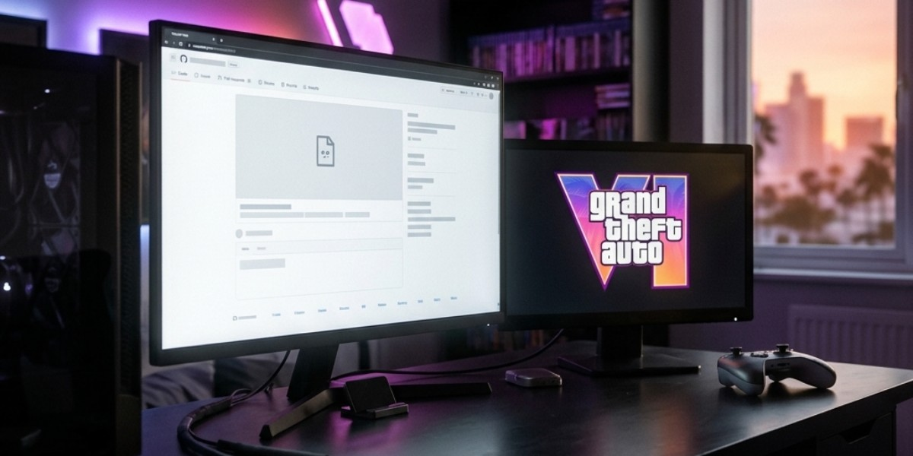

Geekotidien · Édition du 27 novembre 2026
Project Leonida démantelé
GTA 6 sur PC stoppé

Project Leonida visait à rendre jouable sur PC la version Xbox Series X de GTA 6. Chaque joueur devait fournir sa propre copie achetée légalement, et le projet devait seulement adapter le jeu au PC, selon Gamekult.
Le projet a été coupé : sa page GitHub a été supprimée après une demande officielle de Rockstar et Take-Two. Son créateur s'est retiré pour se consacrer à ses études.
Selon l'article, Cyberleek, présenté comme responsable de plusieurs fuites liées à GTA 6, aurait mis en ligne les fichiers d'une version de travail du jeu sur Xbox, celle utilisée par les développeurs juste avant la sortie. Cette mise en ligne n'est attribuée qu'à l'article, sans source citée.
L'article souligne que d'autres projets de recompilation existent et que leur fermeture ne mettra pas fin à ces tentatives.
Le + : Cyberleek aurait mis en ligne une version de travail Xbox.